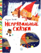

Неправильные сказки

Андрей Усачев по-новому смотрит на русский фольклор, переворачивает его с ног на голову и выворачивает наизнанку. И вот уже дедка с семейством тянут-потянут и вытягивают из пучины морской золотую рыбку, у Лукоморья разгуливает Зеленый Кот, а Принцесса на горошине спит! И слегка сопит. Веселые стихи сопровождаются иллюстрациями Ирины Гавриловой. Для детей 5-8 лет.